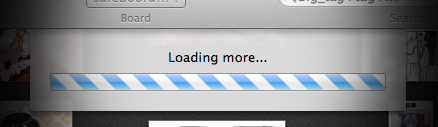
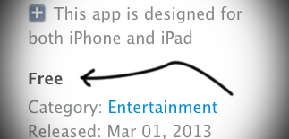

Meet the ultimate imageboard toolkit.
Browse and search in Cover Flow, perform statistical analysis of character appearances and finally, show off your favourite ones as a screensaver. This is the otaku heaven.
Version for Mac
Built with care for native experience.
GBBrowser is not another crossplatform program. It was handcrafted with care for every platform it exists for.
Get source codeSupported sites: safebooru.org (14+) gelbooru.com (18+)

Fast and easy to use. The sky's the limit.
Designed to handle loads of images, this thing doesn't stutter even after you've been browsing a lot.

Oh yeah, it's that good. See for yourself.
GBBrowser is completely free to use.
Designed for Mac and iOS. Checkmate.
You won't even notice it's not a built-in app.